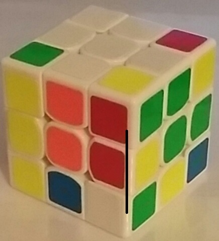

Ici je vais tenter de vous apprendre à finir de a à z un Rubik's Cube 3 par 3 classique car des variantes de ce dernier existe notamment le 3 par 3 mirroir. Je vais donc posé les bases pour réussir avec les formules qui m'ont permis d'apprendre car bien sûr il existe des dizaines et des dizaines de méthode vous pouvez très bien trouvez les votres au fur et à mesure. Comme vous l'aurez remarqué le cube est composé de 6 faces, le blanc fais face au jaune, le vert fait face au bleu, et le rouge fais face au orange. Essayez de retenir l'ordre des couleurs le plus vite possible une technique pour ça, placez la face blanche sur la gauche et donc la jaune sur la droite placez la face rouge en haut et en tournant vous obtenez la phrase: Hervé obéit → RVOB donc rouge vert orange bleu. Une fois que vous connaissez les couleurs places aux pièces il y en a de 3 types, Les Centres, situé au centre de chaque faces ils sont immbilent et constitué d'une seule couleur. Les arrêtes, pièces situé a côté des centres elles sont mobiles et constituéde deux couleurs. Les coins, situé aux extrémités de chaque faces ils sont constituéde trois couleurs.
A partir de maintenant je ne dirais plus face avant,haute,droite,gauche,arrière ou basse. Je vais utiliser la notation Française, un lien vers la notation anglaise (internationale) est disponible ici. Donc la face avant sera A La face haute H La face droite D La face gauche G La face arrière P La face basse B
A partir de maintenant le cube est mélangé, placez votre cube pour que le centre blanc et donc la face blanche soit en haut.
Maintenant vous allez devoir placer les arrêtes contenant un côté blanc sur la face blanche de sorte à ce que le morceau blanc soit bord à bord avec le centre blanc.
Attention vous devez également placé le deuxième côté avec le centre de la couleur correspondante, par exemple l'arrête bleu et blanc doit être entre le centre bleu et blanc dans ce cas on dit qu'elle est bien orientée mais mal placée.
Vous devez donc évitez ceci:
A partir de maintenant ça se corse un petit peu, on va commencer les formules donc pour finir cette étape votre cube doit ressembler à ça: Donc pour ce faire vous aller devoir apprendre et retenir une dernière chose avant les formules il s'agit des mouvements. pour cela je vous invite à vous rendre ici pour voir la liste des mouvements français et anglais.
Pour placer vos coins vous allez devoir identifer un coin avec un côté blanc, placez le sous sa position finale comme ici: 
Vous devez donc utilisé la formule D' B' D B, jusqu'à ce que le coin soit correctement positionné cela peut nécessiter la répétition de la formule.
A partir de maintenant et jusqu'à la fin de la résolution vous devez tenir votre cube avec la face blanche (terminé) en dessous et donc au dessus la face jaune. Pour cette étape il y a deux formules que je vous donne un peu plus loin je dois vous expliquer comment différencier les deux cas possible pour finir cette étape et donc savoir quelle formule appliqué. Nous allons nous concentré sur les arrêtes ne contenant pas de jaune sur leurs faces, une fois qu'une arrête a était identifier placer la face à vous et tourner le cube jusqu'à ce que la couleur face à vous de l'arrête coïncide avec le centre de la face avant. Ensuite voilà les deux cas différents:
Si vous avez une arrête qui est mal placé ou mal orientée comme ici:
Si votre cube ressemble à celui ci vous pouvez passer à l'étape suivante.
Première étape pour finir la face jaune, vous devez tout d'abbord avoir la "croix jaune" contrairement à la "croix blanche" la croix jaune possède des formules et le placement des arrêtes n'importe pas pour le moment. pour le moment vous avez trois cas possible: (on ne s'occupera pas des coins pour le moment)
| peu importe | case jaune | peu importe |
| case jaune | case jaune | peu importe |
| peu importe | peu importe | peu importe |
| peu importe | peu importe | peu importe |
| case jaune | case jaune | case jaune |
| peu importe | peu importe | peu importe |
| peu importe | peu importe | peu importe |
| peu importe | case jaune | peu importe |
| peu importe | peu importe | peu importe |
A partir d'ici Vous avez une croix jaune, on va s'occuper de mettre les coins jaunes sur la face jaune. encore une fois plusieurs cas son possible mais il n'y a qu'une seule formule c'est la prise en main du cube va changer: D H D' H D H2 D'. Dans le cas 1, un coin est bien placé sur la fa ce jaune prenné le comme ci dessous:
| peu importe | case jaune | peu importe |
| case jaune | case jaune | case jaune |
| case jaune | case jaune | peu importe |
dans le cas 2, deux coins sont bien placés on va orienter le cube de manière à avoir un coin jaune mal orienté sur la face avant(en haut à droite).
| peu importe | case jaune | peu importe |
| case jaune | case jaune | case jaune |
| peu importe | case jaune | peu importe |
dans le cas 3, aucun coin n'est bien orienté sur la face jaune on va tenir le cube pour avoir un coin mal orienté sur la zone en haut à droite de la face gauche.
| peu importe | case jaune | peu importe |
| case jaune | case jaune | case jaune |
| peu importe | case jaune | peu importe |
Orienté votre cube comme il le faut, faite la forumule,ré-orienté votre cube puis recommencez.La formule peut être applicable jusqu'à trois fois. Si votre cube ressemble à celui ci vous pouvez passer à l'avant dernière étape.


Dans cette étape vous allez placer à leurs places les coins contenant un côté jaune, si sur votre cube les coins sont déjà placés et orienté vous pouvez passer à l'étape suivante. si ce n'est pas le cas vous allez devoir appliquécette formule: D' A D' P2 D A' D' P2 D2. Pour cette formule vous avez deux cas possible:
Si vote cube ressemble à celui la, passez à la dernière étape. Courage vous y êtes presque.


Dans cette dernière étape nous allons placer les arrêtes il y a deux formules très similaires à retennir, mais plusieurs cas possibles.
Félicitations vous avez terminé votre cube !